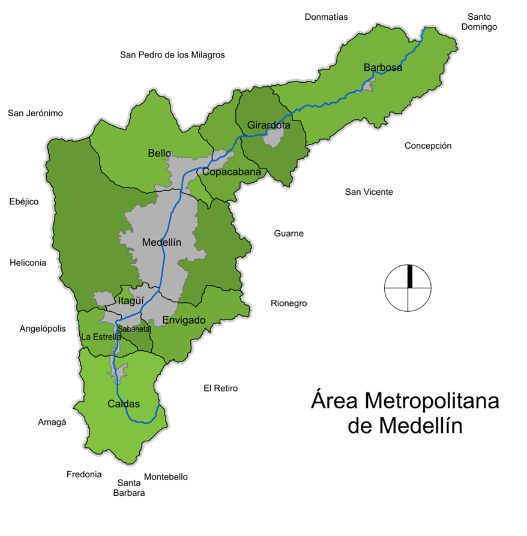

Estrategia de transferencia de conocimiento para la formación dual en TIC en una institución de educación para el trabajo y desarrollo humano en Medellín
¿Qué se busca intervenir con este trabajo?

Pregunta de investigación:
¿Cómo se puede diseñar una estrategia de transferencia de conocimiento que fomente buenas prácticas y apoye la implementación de programas de formación dual en el campo de las Tecnologías de la Información y la Comunicación (TIC) en el contexto educativo de Medellín?
OBJETIVOS
Proponer una estrategia de transferencia de conocimiento orientada a una institución de educación para el trabajo y desarrollo humano en Medellín, que promueva buenas prácticas en la implementación de programas de formación bajo la modalidad dual en el sector de las Tecnologías de la Información y Comunicación (TIC)
1. Comparar modelos, herramientas y variables existentes, utilizadas en la transferencia del conocimiento en el contexto educativo
2. Diseñar una estrategia de transferencia de conocimiento basada en la caracterización detallada de los programas de formación dual y los modelos de transferencia consultados.
3. Validar la estrategia de transferencia de conocimiento a través de la retroalimentación de actores clave en la educación técnica laboral en Medellín
¿Qué elementos encaminaron el desarrollo del trabajo?
-Desafíos educativos en América Latina:
Según el Banco de desarrollo de américa latina (2018) los principales retos en formación de la región son:
| Desafío | Descripción |
|---|---|
| Baja Pertinencia Educativa | Existe un desfase entre las carreras ofrecidas en la educación técnica y las necesidades del mercado laboral, lo que compromete la inserción laboral de los jóvenes. |
| Desigualdad en el Acceso | Los jóvenes de bajos ingresos y de áreas rurales tienen menos acceso a la educación técnica y profesional, perpetuando la inequidad social. |
| Calidad de la Formación | La calidad de la educación técnica es desigual, con programas que no siempre están alineados con las exigencias actuales del mercado laboral, lo que afecta su efectividad. |
| Escasez de Programas de Capacitación Continua | La falta de oportunidades para la capacitación continua limita la actualización de competencias, especialmente en un entorno laboral que evoluciona rápidamente. |
| Articulación Insuficiente con el Sector Productivo | Existe una débil conexión entre el sector educativo y las empresas, lo que dificulta la adecuación de la formación técnica a las necesidades reales del mercado. |
| Inadecuada Formación de Habilidades Socioemocionales | A pesar de su importancia para el éxito laboral, las habilidades socioemocionales no están adecuadamente incorporadas en los currículos de educación técnica. |
| Falta de Información y Orientación Vocacional | Los estudiantes carecen de acceso a información y orientación vocacional efectiva, lo que afecta la toma de decisiones sobre su formación y futuro laboral. |
-Indicadores de mercado laboral de la juventud en Colombia:
-Tasa global de participación (TGP), Tasa de ocupación (TO) y Tasa de desocupación (TD) de la población joven Total 13 ciudades y áreas metropolitanas (Mayo-Julio 2024) fuente:DANE
| Indicador | 2023 (%) | 2024 (%) |
|---|---|---|
| Tasa Global de Participación (TGP) | 58.4 | 59.6 |
| Tasa de Ocupación (TO) | 48.8 | 49.2 |
| Tasa de Desocupación (TD) | 16.4 | 17.5 |
-Jóvenes entre 15 y 28 años que no estudian ni se encuentran ocupados (Mayo-Julio 2024)
fuente:DANE
| Total Nacional | Población (miles) | Proporción (%) |
|---|---|---|
| Población en edad de trabajar de 15 a 28 años | 11.226 | -- |
| Jóvenes entre 15 y 28 años que no estudian ni se encuentran ocupados | 2597 | 23.1 |
| Jóvenes hombres entre 15 y 28 años que no estudian ni se encuentran ocupados | 881 | 7.8 |
| Jóvenes mujeres entre 15 y 28 años que no estudian ni se encuentran ocupados | 1716 | 15.3 |